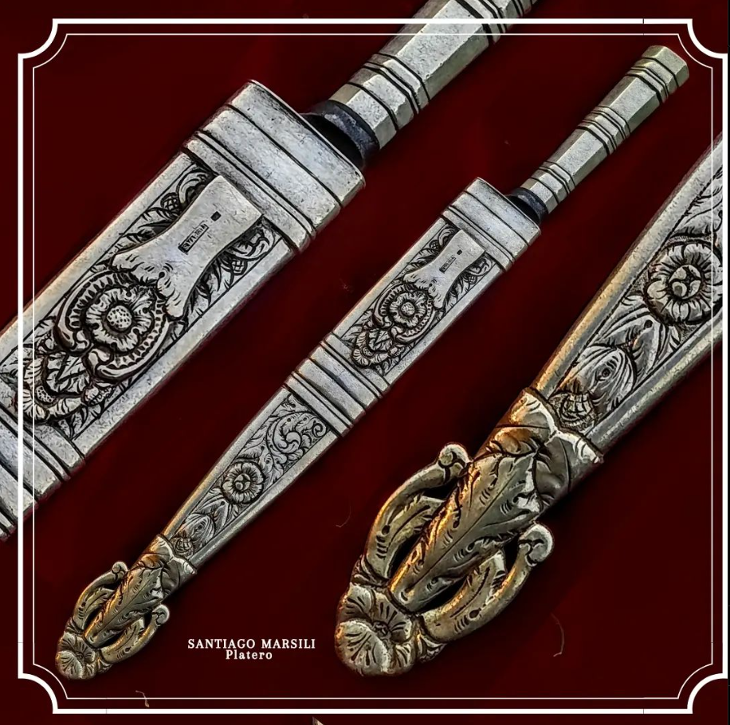

Forjar hojas de cuchillos y esculpir cabos de plata es mi pasión convertida en arte. Cada pieza comienza como una visión en mi mente, cuidadosamente seleccionando los materiales y diseños. El proceso de forja es una danza de fuego y metal, donde el acero cobra vida bajo el calor y la presión del yunque, creando una hoja que combina funcionalidad y belleza. Después de templar y pulir, llega el momento de dar vida al mango de plata, utilizando técnicas de cincelado y grabado para crear diseños únicos que realcen la elegancia del cuchillo. Cada pieza que creo es el resultado de habilidad, paciencia y amor por el oficio, y estoy emocionado de compartir estas obras de arte culinarias con el mundo.